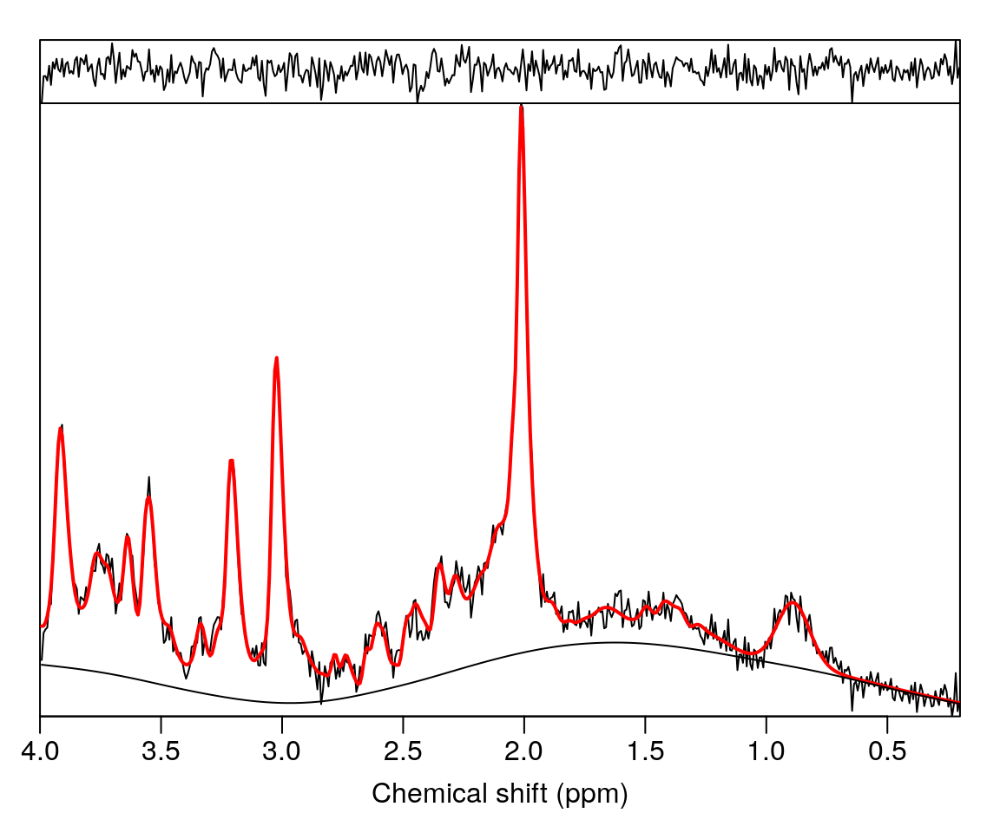
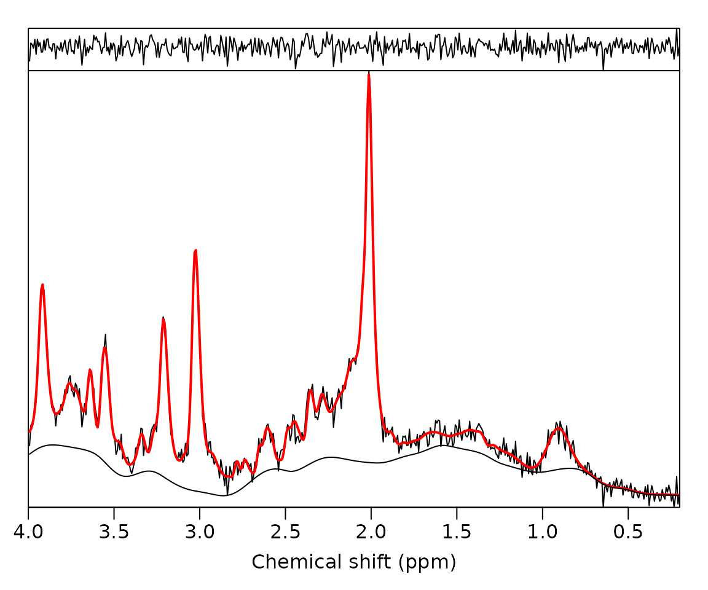
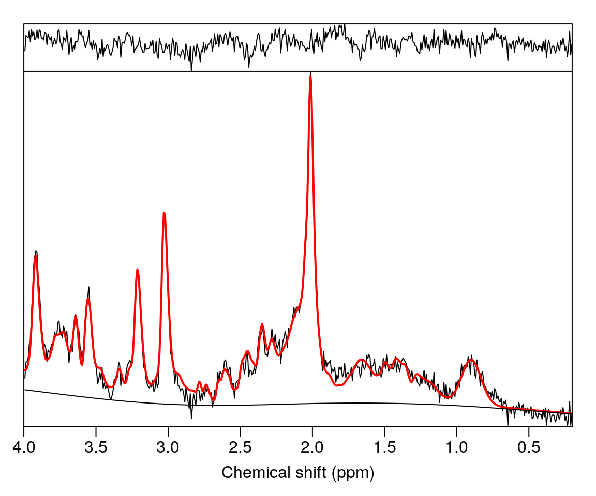
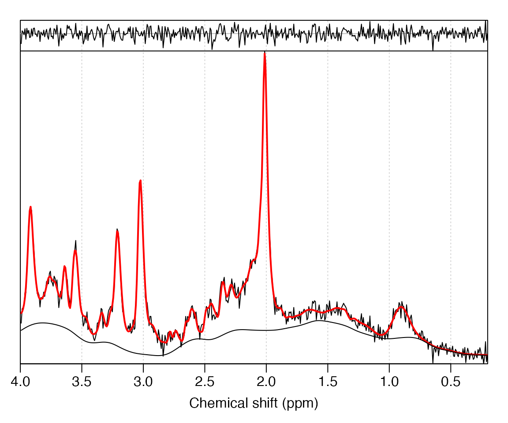
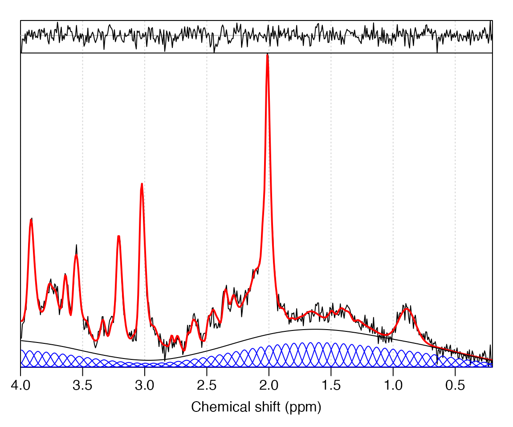
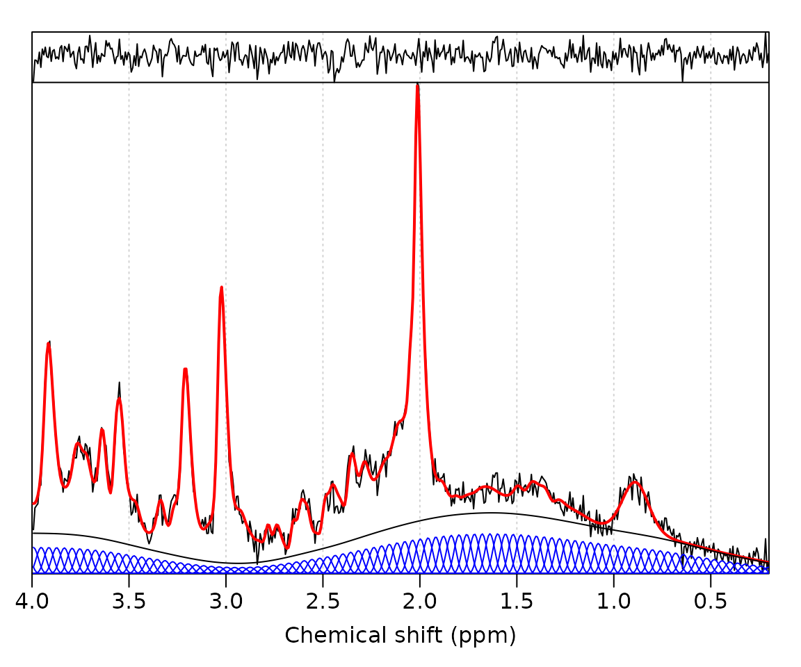

A good baseline estimate is a prerequisite for accurate metabolite quantitation. The default MRS analysis algorithm in spant (ABfit) is designed to find accurate baseline estimates by automatically adapting the level of baseline flexibility to match the data complexity. This process is inevitably a balancing act between a baseline that is too smooth (resulting in greater bias), and too flexible (resulting in greater variance). Therefore, ABfit has a number of fitting options to adjust the baseline according to user preference. In this vignette the most common adjustments are demonstrated.
Load the spant analysis package:
Read an example dataset from file and simulate matching basis set:
fname <- system.file("extdata", "philips_spar_sdat_WS.SDAT", package = "spant")
mrs_data <- read_mrs(fname, format = "spar_sdat")
basis <- sim_basis_1h_brain_press(mrs_data)Run a default ABfit analysis and plot the result:

The above fit looks good, with a smooth baseline and no significant signals in the residual (top trace) above the noise level. We can find the automatically determined level of baseline smoothness by inspecting the results table in the fit_res object:
fit_res$res_tab$bl_ed_pppm
#> [1] 2.364083The baseline flexibility was found to be 2.4 ED per ppm, where ED is the effective dimension – analogous to the number of spline functions required per ppm. Whilst the automated fit looks reasonable at first glance, let’s try and convince ourselves we can’t do better with manual adjustments to the algorithm.
Changing the default behaviour of ABfit is achieved by supplying an options structure to the fit_mrs function. The abfit_opts function generates the default fitting options, which may be modified by supplying arguments. To manually specify the baseline flexibility we set the auto_bl_flex option to FALSE and set the bl_ed_pppm option to the desired level. A greater value results in more baseline flexibility, let’s try a value of 8 ED ppm:
opts <- abfit_opts(auto_bl_flex = FALSE, bl_ed_pppm = 8)
fit_res <- fit_mrs(mrs_data, basis, opts = opts)
plot(fit_res)
The baseline is clearly more flexible, resulting in a slightly improved residual, however some baseline features are likely to be due to instability from noise, rather than true spectral features. For the next analysis let’s investigate 1 ED pppm:
opts <- abfit_opts(auto_bl_flex = FALSE, bl_ed_pppm = 1)
fit_res <- fit_mrs(mrs_data, basis, opts = opts)
plot(fit_res)
Now we have a much smoother (almost linear) baseline, which comes at the cost of having broad unmodelled signals in the residual – ultimately resulting in biased metabolite levels. An alternative to manually specifying a fixed level of baseline flexibility is to adjust the criterion used for automated estimation. The aic_smoothing_factor can be set to a smaller value (default = 5) to encourage more flexible baselines, whilst still being adaptive to any broad spectral features:
opts <- abfit_opts(aic_smoothing_factor = 1)
fit_res <- fit_mrs(mrs_data, basis, opts = opts)
plot(fit_res)
It can be informative to visualise the individual spline components used for baseline modelling by saving these in the results object:
opts <- abfit_opts(export_sp_fit = TRUE)
fit_res <- fit_mrs(mrs_data, basis, opts = opts)
stackplot(fit_res, omit_signals = basis$names)
The default number of spline functions for ABfit is 15 per PPM which may be verified from the above plot. Let’s try increasing to 25:
opts <- abfit_opts(export_sp_fit = TRUE, bl_comps_pppm = 25)
fit_res <- fit_mrs(mrs_data, basis, opts = opts)
stackplot(fit_res, omit_signals = basis$names)
Clearly the density of spline functions has increased, however the baseline smoothness remains very close to the default. The general principle for ABfit (derived from P-splines) is to over specify the number of baseline modelling spline functions, and rely on a penalty factor to encourage smoothness.
fit_res$res_tab$bl_ed_pppm
#> [1] 2.276357Inspecting the automatically determined level of baseline flexibility shows the ED per ppm value remains very close to the default analysis despite the change in spline function density – precisely the desired behaviour.